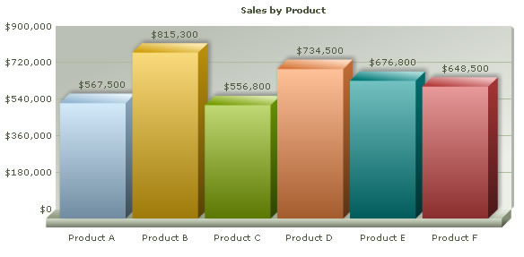

In this section, we will show you how to use FusionCharts ASP class functions to plot charts from data contained in ASP arrays. We will cover the following examples here:
- Creating a single series chart from data contained in an array
- Creating a multi-series chart from data contained in arrays
Before you go further with this page, we recommend you to please see the previous section, Basic Examples, as we start off from concepts explained in that page.
The code examples contained in this page are present in Download Package > Code > ASPClass > ArrayExample folder.
The code to create a single series chart is contained in SingleSeries.asp and can be listed as under:
<%@LANGUAGE="VBSCRIPT"%>
<% option explicit %>
<%
' We have included ../Includes/FusionCharts_Gen.asp, which contains FusionCharts ASP Class
' to help us easily embed the charts.
%>
<!--#include file="../Includes/FusionCharts_Gen.asp"-->
<HTML>
<HEAD>
<TITLE>
FusionCharts XT - Array Example using Single Series Column 3D Chart
</TITLE>
<%
'You need to include the following JS file, if you intend to embed the chart using JavaScript.
'Embedding using JavaScripts avoids the "Click to Activate..." issue in Internet Explorer
'When you make your own charts, make sure that the path to this JS file is correct. Else, you will get JavaScript errors.
%>
<SCRIPT LANGUAGE="Javascript" SRC="../../FusionCharts/FusionCharts.js"></SCRIPT>
</HEAD>
<BODY>
<h4>Plotting single series chart from data contained in Array.</h4>
<%
'In this example, using the FusionCharts ASP Class, we plot a single series chart
'from data contained in an array.
'The array needs to have two columns - first one for data labels/names
'and the next one for data values.
'Let's store the sales data for 6 products in our array). We also store
'the name of products.
'Store Name of Products
dim arrData(6,2)
arrData(0, 0) = "Product A"
arrData(1, 0) = "Product B"
arrData(2, 0) = "Product C"
arrData(3, 0) = "Product D"
arrData(4, 0) = "Product E"
arrData(5, 0) = "Product F"
'Store sales data
arrData(0, 1) = 567500
arrData(1, 1) = 815300
arrData(2, 1) = 556800
arrData(3, 1) = 734500
arrData(4, 1) = 676800
arrData(5, 1) = 648500
dim FC
' Create First FusionCharts ASP class object
set FC = new FusionCharts
' Set chart type to Column 3D
call FC.setChartType("Column3D")
' Set chart size
call FC.setSize("600","300")
' Set Relative Path of SWF file.
call FC.setSWFPath("../../FusionCharts/")
dim strParam
' Define chart attributes
strParam="caption=Sales by Product;numberPrefix=$"
' Set chart attributes
call FC.setChartParams(strParam)
' call FusionCharts ASP Class Function to add data from the array
call FC.addChartDataFromArray(arrData , "")
' Render the chart
call FC.renderChart(false)
%>
</BODY>
</HTML> In the above example:
- We have included FusionCharts_Gen.asp and FusionCharts.js.
- Stored the category names or labels in the first column of the two dimensional array arrData.
- Then we stored respective data values in the second column of the two dimensional array arrData.
- Created an instance of the FusionCharts ASP class for Column 3D chart with 600 pixels width, 300 pixels height.
- Set the relative path of chart SWF file.
- Rendered chart using the renderChart() function.
Please go through FusionCharts ASP Class API Reference section to know more about the functions used in the above code.
When you view the chart, you will see a chart as shown below:
Let us now create a multi-series chart from data contained in arrays. We create a file MultiSeries.asp with the following code:
<%@LANGUAGE="VBSCRIPT"%>
<% option explicit %>
<%
' We have included ../Includes/FusionCharts_Gen.asp, which contains FusionCharts ASP Class
' to help us easily embed the charts.
%>
<!--#include file="../Includes/FusionCharts_Gen.asp"-->
<HTML>
<HEAD>
<TITLE>FusionCharts XT - Array Example using Multi Series Column 3D Chart</TITLE>
<%
'You need to include the following JS file, if you intend to embed the chart using JavaScript.
'Embedding using JavaScripts avoids the "Click to Activate..." issue in Internet Explorer
'When you make your own charts, make sure that the path to this JS file is correct. Else, you will get JavaScript errors.
%>
<SCRIPT LANGUAGE="Javascript" SRC="../../FusionCharts/FusionCharts.js"></SCRIPT>
</HEAD>
<BODY>
<h4>Plotting multi-series chart from data contained in Array.</h4>
<%
' In this example, using FusionCharts ASP Class we plot
' we plot a multi-series chart from data contained in arrays
' The arrays need to be of the following structure :
' 1. Array to store Category Names :
' A single dimensional array storing the category names
' 2. A 2 Dimensional Array to store data values
' ** Each row will store data for 1 dataset
' Column 1 will store : Dataset Series Name.
' Column 2 will store : Dataset attributes
' (as list separated by delimiter.)
' Column 3 and rest will store : values of the dataset
' Let's store the sales data for 6 products in our array. We also store the name of products.
'Store Name of Products as category labels
dim arrCatNames(6)
arrCatNames(0) = "Product A"
arrCatNames(1) = "Product B"
arrCatNames(2) = "Product C"
arrCatNames(3) = "Product D"
arrCatNames(4) = "Product E"
arrCatNames(5) = "Product F"
'Store sales data for current year
dim arrData(2,8)
arrData(0,0) = "Current Year" ' Dataset Series Name
arrData(0,1) = "" ' Dataset Parameters
arrData(0,2) = 567500
arrData(0,3) = 815300
arrData(0,4) = 556800
arrData(0,5) = 734500
arrData(0,6) = 676800
arrData(0,7) = 648500
'Store sales data for previous year
arrData(1,0) = "Previous Year"
arrData(1,1) = ""
arrData(1,2) = 547300
arrData(1,3) = 584500
arrData(1,4) = 754000
arrData(1,5) = 456300
arrData(1,6) = 754500
arrData(1,7) = 437600
' Create FusionCharts ASP Class object for mulitseries column3d chart
dim FC
' Create First FusionCharts ASP class object
set FC = new FusionCharts
' Set chart type to Multi Series Column 3D
call FC.setChartType("MSColumn3D")
' Set chart size
call FC.setSize("600","300")
' Set chart ID
call FC.setID("FC1")
' Set Relative Path of SWF file.
call FC.setSWFPath("../../FusionCharts/")
dim strParam
' Define chart attributes
strParam="caption=Sales by Product;numberPrefix=$;rotateValues=1"
' Set chart attributes
call FC.setChartParams(strParam)
' Pass the 2 arrays storing data and category names to
' FusionCharts ASP Class function addChartDataFromArray
call FC.addChartDataFromArray(arrData, arrCatNames)
' Render Second Chart with JS Embedded Method
call FC.renderChart(false)
%>
</BODY>
</HTML> Let's analyze what we have done in the code above:
- We included FusionCharts_Gen.asp class and FusionCharts.js class.
- We created two arrays - one single dimensional array and one two dimensional array. The single dimensional array, arrCatNames, stores category names. The two dimensional array, arrData, stores dataset name, dataset parameters and values in its each row.
Note: The dataset parameters separated by delimiters should be stored as string. It is optional for multi-series charts, but compulsory for combination charts. - We created the FusionCharts ASP class object for Multi-series Column 3D chart with 600 pixels width and 300 pixels height.
- We set the relative path of chart SWF file using the setSwfPath() function.
- We stored delimiter separated chart attributes in strParam variable and passed this variable through the setChartParams() function to set chart attributes.
- Next, we called the addChartDataFromArray() function and passed arrData and arrCatNames arrays through it. The arrays should be passed in this order only, that is., $arrData is to be the first parameter and arrCatNames the second.
- Finally we rendered the chart using the renderChart() function.
Please go through the FusionCharts ASP Class API Reference section to know more about the functions used in the above code.
When you view the chart, you will see a chart as shown below:

In Download Package > Code > ASPClass > ArrayExample, we have more example codes to create Stacked and Combination Charts too, which have not been explained here, as they are similar in concept. You can directly see the code if you want to.